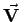
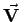
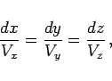
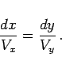
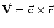
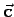

Inhalt Index DeskTop Bronstein

 Vektoranalysis und Feldtheorie Grundbegriffe der Feldtheorie Vektorfelder
Vektoranalysis und Feldtheorie Grundbegriffe der Feldtheorie Vektorfelder


Für das Vektorfeld  (s. Abbildung)
(s. Abbildung)
heißt eine Kurve C Feldlinie, wenn der Vektor  in jedem Kurvenpunkt P ein Tangentenvektor ist. Durch jeden Punkt eines Feldes verläuft eine Feldlinie. Die Feldlinien schneiden einander nicht, ausgenommen solche Punkte, in denen die Funktion
in jedem Kurvenpunkt P ein Tangentenvektor ist. Durch jeden Punkt eines Feldes verläuft eine Feldlinie. Die Feldlinien schneiden einander nicht, ausgenommen solche Punkte, in denen die Funktion  nicht definiert ist oder verschwindet. Die Differentialgleichungen der Feldlinien eines Vektorfeldes , das in kartesischen Koordinaten gegeben ist, lauten
nicht definiert ist oder verschwindet. Die Differentialgleichungen der Feldlinien eines Vektorfeldes , das in kartesischen Koordinaten gegeben ist, lauten
a) allgemein:
|  | (13.26a) |
b) für ein ebenes Feld:
|  | (13.26b) |
Zur Lösung dieser Differentialgleichungen s. die Abschnitte Trennung der Variablen bzw.
Integration der homogenen partiellen linearen Differentialgleichung.
| Beispiel A |
|
Die Feldlinien eines Zentralfeldes sind Geraden, die vom Zentrum zum Feldpunkt verlaufen. |
| Beispiel B |
|
Die Feldlinien des Vektorfeldes  sind Kreise, die in einer senkrecht auf dem Vektor  stehenden Ebene liegen. Ihr Mittelpunkt liegt auf einer zu parallelen Achse. |